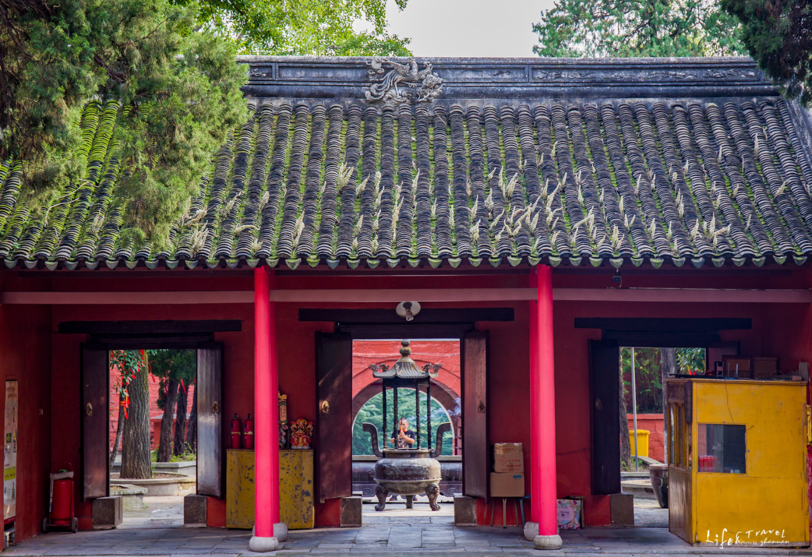
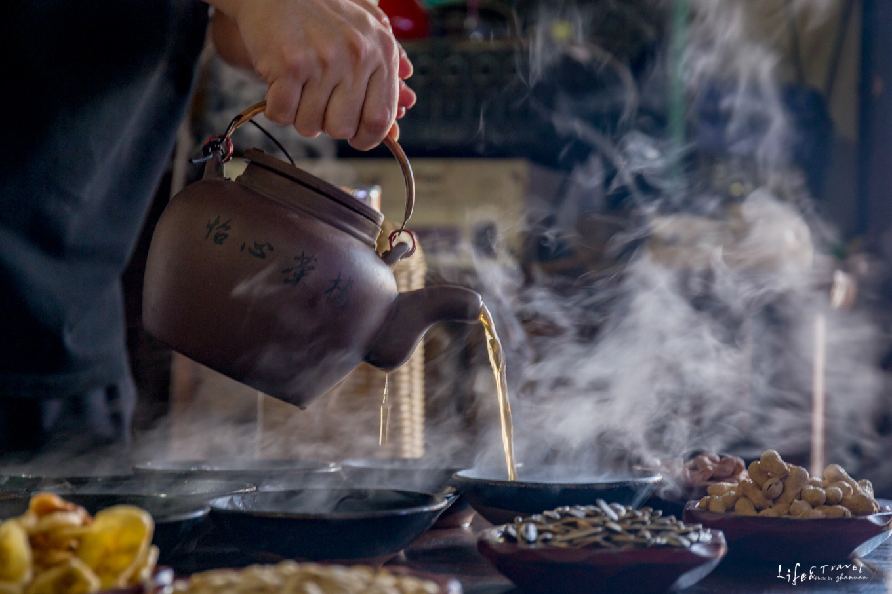
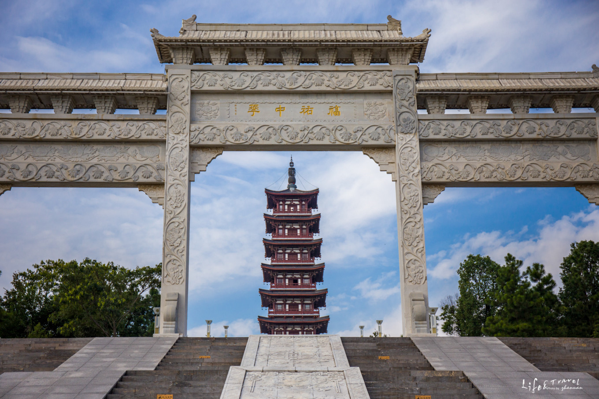
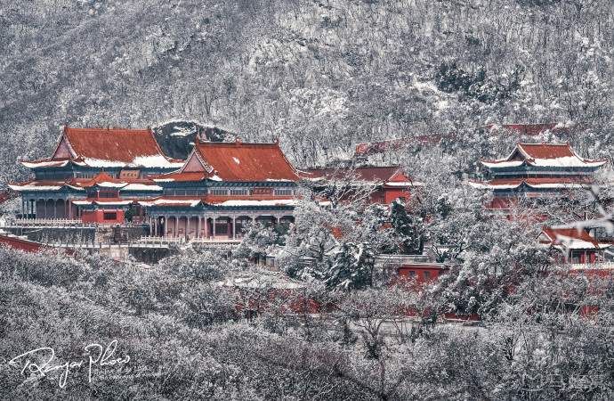
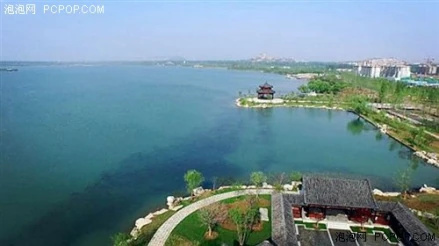
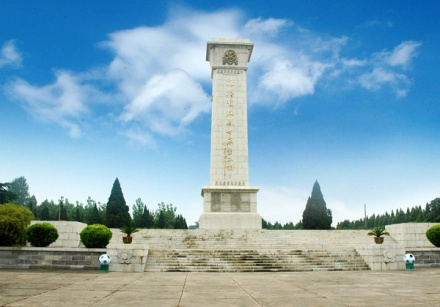
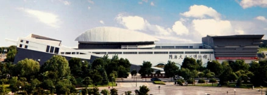
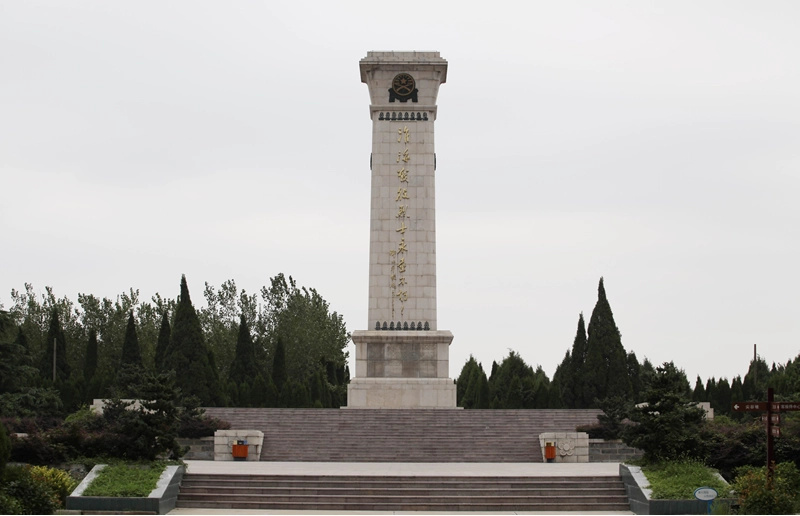
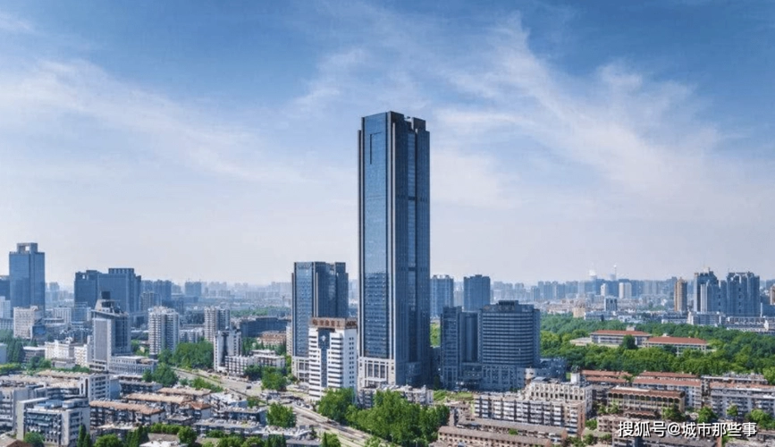
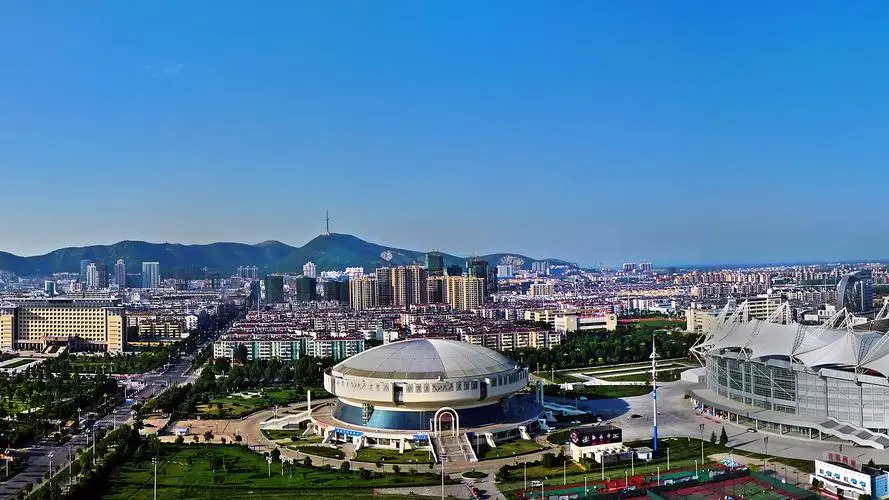

Explore the stunning natural wonders and cultural landmarks of Huaibei
Our most recommended attraction that you simply cannot miss
Xiangshan Park is the crown jewel of Huaibei's attractions, nestled at the foot of the majestic Xiangshan Mountain. As the city's most iconic landmark, this expansive park offers visitors a perfect blend of natural beauty, historical significance, and recreational opportunities.
The park features ancient temples, scenic walking trails, observation decks with panoramic city views, and beautifully landscaped gardens that change with the seasons. The mountain itself holds deep cultural significance as the legendary founding place of the city over 4,000 years ago.
From ancient towns to modern parks, each destination tells a unique story

NatureKnown as the "Green Pearl of Northern Anhui," Longji Mountain offers breathtaking natural scenery with its distinctive ridge formations, dense forests, and crystal-clear streams. The mountain is a paradise for hikers and nature photographers, featuring rare plant species and diverse wildlife habitats.

Eco-TourismA stunning ecological park built on the site of a former coal mining subsidence area, Nanhu Wetland Park is a testament to Huaibei's green transformation. The park features expansive lakes, lush wetlands, bird watching areas, and recreational facilities, making it a perfect destination for families and nature lovers.

HeritageStep back in time in this beautifully preserved ancient town famous for its traditional tea culture. Lintong has been a center of tea trading for centuries, and its charming streets are lined with historic teahouses where visitors can experience authentic tea ceremonies and local delicacies.

CultureThis meticulously reconstructed ancient town celebrates the golden age of the Grand Canal during the Sui and Tang dynasties. Visitors can explore traditional architecture, enjoy cultural performances, browse artisan shops, and dine in authentic period-style restaurants along the canal waterfront.

LeisureHuajia Lake offers a serene escape from city life with its tranquil waters, surrounding hills, and well-maintained recreational facilities. Popular activities include boating, fishing, camping, and lakeside picnics. The area is especially beautiful during sunset when the golden light reflects off the water's surface.

HistoricThis ancient stone-paved street is a living museum of Huaibei's architectural heritage. The well-preserved buildings showcase traditional Northern Anhui construction techniques, and the street is home to local artisans, traditional food vendors, and small museums documenting the area's rich history.

MemorialThis important memorial site commemorates one of the most decisive battles in Chinese history. The complex includes the former frontline command headquarters, historical exhibitions, memorial monuments, and the nearby Shuangduiji battlefield site, offering a profound educational experience about China's revolutionary history.

MuseumThe city's premier museum houses an extensive collection of artifacts spanning Huaibei's 4,000-year history. Exhibits include ancient pottery, bronze wares, calligraphy, traditional costumes, and coal mining heritage displays. Interactive exhibits and regular educational programs make it engaging for visitors of all ages.

Eco-ParkThis extensive urban green space stretches across the city, connecting parks, gardens, and recreational areas. Walking and cycling paths wind through landscaped gardens, public art installations, and rest areas. It represents Huaibei's commitment to creating a livable, eco-friendly urban environment for residents and visitors.
Spring (April-May) and Autumn (September-October) offer the most pleasant weather with comfortable temperatures and beautiful natural scenery.
Public buses cover all major attractions. Taxis and ride-sharing services are readily available. Consider renting a bicycle for the Green Corridor.
Most attractions are free or have low admission fees. Carry comfortable walking shoes and a camera. English signage is available at major sites.